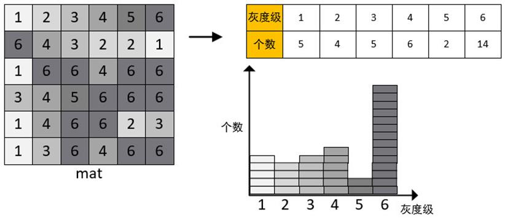

|
类型 |
统计信息 |
|
描述 |
计算灰度图像的直方图。 直方图的概念：图像中每种灰度级像素的个数，反映图像中每种灰度出现的频率。  别名：ZV_Hist |
|
语法 |
ZV_MthHist(src,hist,size,lower,upper)
参数： src：ZVOBJECT类型，单通道8U或16U图像 hist：ZVOBJECT类型，计算的直方图结果，矩阵类型 size：直方图数据分段的数量，最大值8192，最小值1 lower：计入直方图的灰度下限，灰度低于该数值的像素将不计入统计 upper：计入直方图的灰度上限（不包含），灰度大于等于该数值的像素将不计入统计 |
|
适用控制器 |
支持ZV功能或者5系列以上的控制器 |
|
例子 |
ZVOBJECT src,hist ZV_ImgRead(src,"0.bmp",0) '以原图像格式读取图片 ZV_MthHist(src,hist,256,0,255) '计算图像的直方图hist，1行256列的矩阵 |